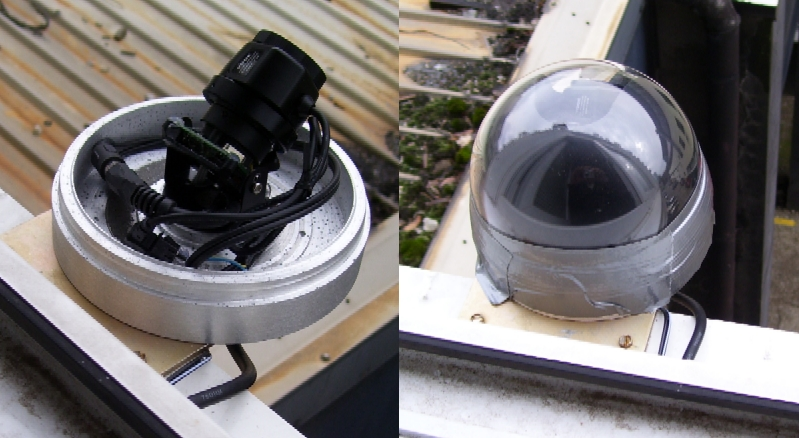

Camera and software setup



About Croatian Meteor Network |
||
History of the CMNA long tradition of meteor observing in Croatia started somewhere in the second part of the last century. At that time Croatia was part of now non-existing federal state of Yugoslavia. The leading center of activity was the Public Astronomical Observatory of Zagreb, together with some serious activity carried on at the Public Observatory of Pula which was founded around remains of the old Austro-Hungarian naval observatory that was destroyed in WW2. Observations were done visually, mostlyin well-organized observing groups. When the Yugoslav-Chech solar observatory was put into operation on the island of Hvar in late 60ties and early 70ties of the 20th century, three specialized all-sky cameras came there, but we do not have any information if, and for how long, they were in use. In the meantime visual observations became very popular among pupils attending free-time astronomical activities organized by schools, public observatories or amateur societies. Amateur astronomical society from town of Sibenik, gathered around "Faust Vrancic" gymnasium was very active and respected at that time. In the late 80ties amateur astronomical society Visnjan founded now famous Visnjan Observatory, started organizing summer schools of astronomy and rapidly enbraced meteor observing too. One EN-network camera was located there, but it soon went out of operation due to malfunction of the photographic camera and was never repaired afterwards. Visual observations continued, soon being complemented by VLF experiments, radio and video observations. These efforts culminated with the Croatian expedition to Mongolia during Leonid storm in 1998. The first instrumental recording of an electrophonic sound was made during this expedition. This work is continued up to day culminating with the idea of the video meteor network in 2005, and its realization in 2006-7. |
||
The CMNThe camera operators currently are (sorted alfabetically by the first name for no obvious reason): Alan Pevec, Aleksandar Borojević, Aleksandar Merlak, Alen Žižak, Berislav Bračun, Dalibor Brdarić, Damir Matković, Damir Šegon, Dario Klarić, Dejan Kalebić, Denis Štogl, Denis Vida, Dorian Božićević, Filip Lolić, Filip Novoselnik, Gloryan Grabner, Goran Ljaljić, Ivica Ćiković, Ivica Pletikosa, Janko Mravik, Josip Belas, Korado Korlević, Krunoslav Vardijan, Luka Osokruš, Maja Crnić, Mark Sylvester, Mirjana Malarić, Reiner Stoos, Saša Švagelj, Sonja Janeković, Tomislav Sorić, VSA group 2007, Zvonko Prihoda, Željko Andreić, Željko Arnautović, Željko Krulić. |
||
CMN tehnologyOne of the main goals behind the idea of CMN is use of cheap and easy to find hardware and software. Outhright at the beginning of CMN project we thus decided to use surveilance cameras with as little modifications as possible. After many tests of different models, 1004X black-and-white cameras were chosen for CMN. Their main advantage is availability and low price (around 60 EUR currently). They are build around well known Sony 1/3" EXView HAD CCD chip.They provide black and white image at standard 25 frames per second, which allows for simple coupling with a PC: almost any PC-TV card can be used to digitize video signal from these cameras. PC requirements are relaxed, so older PCs can be used. Any Pentium-based PC with 700 MHz and up processor clock and 128 MB RAM will suffice. For the same reason, standard 4 mm F/1.2 objective lenses are used on most cameras. They provide a good compromise between sensitivity (the faintest meteors recorded with this objective are around 4th magnitude) and image scale (which in this case is around 10'/pix). Putting everything together, with use of a second-hand PC's, the whole recording system can be put together for about 200 EUR. The hardware of the camera is slightly modified in such a way that the video signal gain is fixed to about 90% of maximal gain. This is done solely to make camera more suitable for photometry. Camera can be used without this modification also, the only difference being that variable gain will make accurate trail photometry impossible in most cases. The trails itself will be recorded without any problems.Using an unmodified camera is a good option if one is not able to perform the required modification, or to find someone who could do it. The modification itself is not difficult, but requires some soldering experience and a good solder iron as components on camera electronic board are tiny indeed. A CMN camera mounted on the outside of a building window (first image - left). Camera base is in this case custom made, but the rest of the hardware is standard hardware bought with the camera. In operation camera is covered with an acrylic dome (first image - right) which is part of the standard surveilance camera housing. Note the seal at the base of the dome, made with duct tape. A good quality electrician tape can also be used. The seal has to be checked every month or so, and changed when neccessary. Cabels for video signal and camera power pass through the base of the camera housing throuh an oversize hole, and go into the building throuh a small hole in the side of the window. A 15 mm dia hole is enough for both cabels, even with their connectors on them. After the cables are pulled out, the hole can be sealed with silicone or simmilar. Interestingly, we found out that it is better to leave a hole in the camera baseplate opened than to seal it. This particular camera is now in its second year of almost uninterrupted service. When in use, the camera is mounted inside a standard plastic hemispherical dome fixed to a wall, or to some other convenient structure. The dome itself is additionally sealed with plastic tape or silicone seal, but a hole is intentionally left at the bottom plate to allow the moisture to escape. So far, with occasional change of the seal tape, no trouble with water or moisture was observed after more than a year of continuous use of the network oldest cameras. We have moisture problems only after a very heavy storms if the sealing tape was aged too much. Camera cables lead inside the building where the PC is located. SkyPatrol program (SP) is used for image acquisition. Its main advantage is that it works with almost any video-capture card and all Windows operating systems from Win98 up. It is freeware and very simple to use. Once set, it will run the camera automatically. The program produces still images that are result of integration of video images during one minute or longer. The resulting images are stored as 24-bit color bmp format, usually in 384x288 pixel size. As the camera is black and white, the integrated image is stored in the blue color channel only. The other two color channels are used for recording the time of maximal brightening of any given pixel. Thus accurate data about appearance of bright objects are preserved in the resulting image. The program can "integrate" for several minutes of time, but for CMN a standard integration time of 1 minute is adopted (in this case the still image is an integration of 1500 frames). This makes images less cluttered with moving objects (of whose the meteors are the most rare ones; airplanes, satellites, even birds lit by light-pollution are recorded most of the time). The program has built-in detection of moving objects and additionally stores small movies (80x80 pixels) of detected events that can be used to reconstruct them. Last, but not least, the data about all events detected by the program are stored in a log file. The program can simultaneously record data from four cameras, but this option is not used in CMN. One small disadvantage of this program is that it constructs an average "dark frame" at the beginning of each integration, so the first two seconds are recorded with only 5 fps. Because of a non-standard image format a viewer program, SkyPatrolViewer (SPV) is included in the distribution of the SP. It is used to show SP images on the screen, to analyse them, or to store them as standard black and white 8-bit bmp images. The transformation in the 8-bit bmp image however preserves only the integrated image. Data about the time of maximal pixel brightness is lost. We use the SPV to convert images into the standard bmp format. They are afterwards, together with the original log file from SP, used for data reduction with our own software. |
||